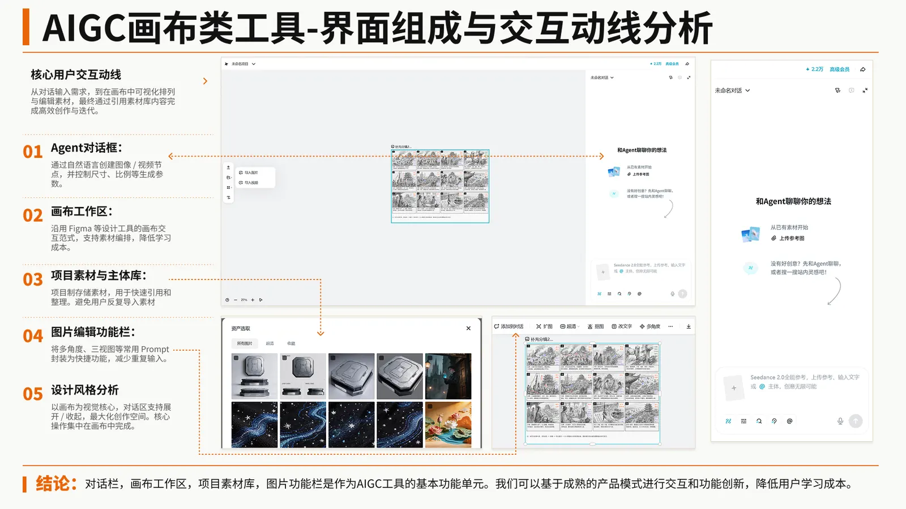
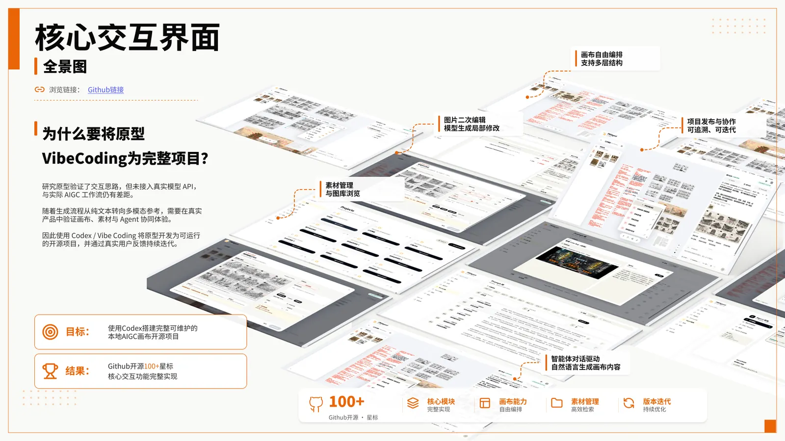
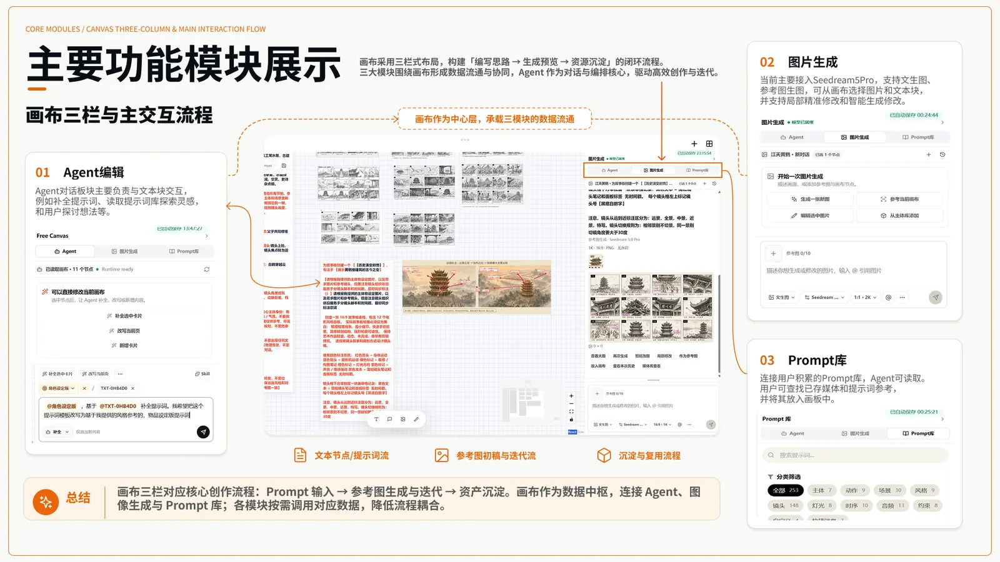
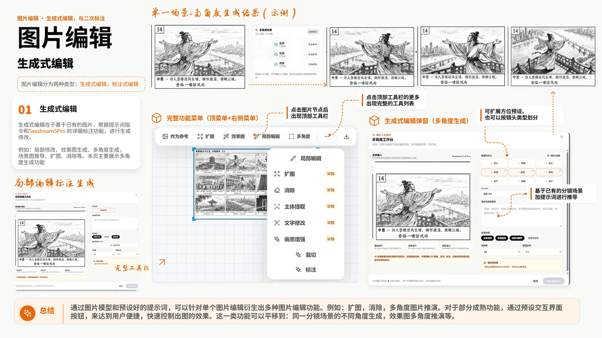
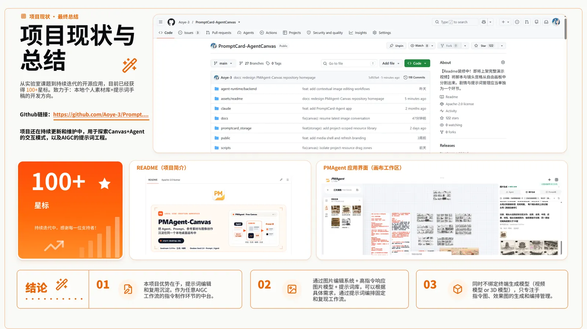

← 返回所有作品
Case study 02 / Open source product
PMAgent-Canvas
让提示词、参考素材、图片生成与分镜编辑在一个自由画布里协同工作。
- 角色
- 交互设计 · 前端设计 · 开发
- 时间
- 2026.01—至今
- 类型
- 实验室期间个人开源项目

项目概览
这是我在金史密斯智能创新与认知实验室期间发起的个人开源项目。它从提示词库研究出发，尝试解决 AIGC 创作者在参考图管理、提示词组织、图像生成和分镜编辑中不断切换工具的问题。
我负责前期调研、功能架构、原型与 A/B 测试，并继续完成前端交互和后端 Agent Runtime、模型 SDK 的接入。
01 / LIBRARY集中管理参考图与提示词
02 / CANVAS在画布中组织镜头与生成结果
03 / AGENT把生成能力嵌入具体创作任务
从工作流出发
项目先梳理视频分镜制作中的素材、提示词与图像之间的关系，再定义工具边界和操作顺序。设计上，我希望用户能保留素材脉络，并在生成后继续比较、挑选与编辑结果。


原型到可运行应用
根据原型反馈，我持续迭代画布工作区、图片编辑、快捷节点和任务流程。开发过程中使用 Codex 辅助实现，让设计方案能够以真实软件的形式接受验证。



当前状态
项目已在 GitHub 开源，并持续更新提示词媒体库、Agent 交互及图像编辑流程。它也是我探索 设计、研究与开发一体化工作方式的长期实践。